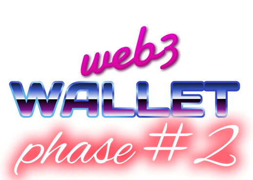
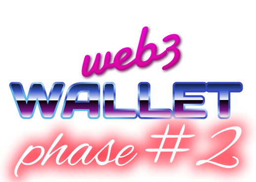

Integrations
- WIP-2001 Sushi swap integration
- WIP-2002 1Inch integration
- WIP-2003 ENS integration
- WIP-2004 Aave yield farming
- WIP-2005 Compound yield farming
- WIP-2006 Uniswap yield farming
- WIP-2007 Curve yield farming
- WIP-2008 Aave lending and borrowing
- WIP-2009 Compound lending and borrowing
- WIP-2010 LIDO staking
- WIP-2011 Rocket pool staking
- WIP-2012 GMX Derivatives
- WIP-2013 DYDX Derivatives
- WIP-2014 Binance bridge
- WIP-2015 Matcha
- WIP-2016 Launchpad
- WIP-2017 Polygon
- WIP-2018 Arbitrum
- WIP-2019 Optimism
- WIP-2020 Binance smart chain
- WIP-2021 Polkadot
- WIP-2022 Harmony
- WIP-2024 Near
- WIP-2025 Fantom
- WIP-2026 Solana
- WIP-2027 Moonbeam
- WIP-2028 Boba network
There are three main areas of focus for phase #2:
- Continue to iterate on and to improve core wallet experience
- Android and Browser extension versions
- Integrations, both dapps and chains
Integrations
warrant further elaboration, they are the stars of the show and the highlight of phase #2. And major differentiation. Our roadmap contains every popular category of defi / web3 products. Virtually all the products are considered blue chips on Ethereum. Here are some of the reasons why we chose this path forward:
- They are the most battle-tested and secure and have survived the crashes and hacks that took place over past year relatively unscathed.
- They are all actually decentralized DAOs.
- One can't really claim to have native support for defi if you don’t support the most popular products.
- Most, if not all, already have an ecosystem grants program.
- They have a large user base who are likely interested in the mobile versions of the product.
- Our core target audience already uses those products. They are likely to understand our mission and values. (ei their users are degens)
There are some apps that integrate Uniswap swaps only, yet Uniswap also offers staking and yield farming. Not to mention that virtually all DAOs typically have a smart contract governance system (example). What sets us apart is that we want to do "deep" integration, where we include all the different aspects of the dapp / protocol / chain. I know of no other wallet that offers such comprehensive integrations and we hope to win the hearts and minds of their community of users this way.
We eventually want native support for as many dapps and chains as possible and this is why we will never stop adding new integrations, however, we think this is a great selection to start with.
Grown and Marketing stragy
We have adopted a content marketing strategy and plan to constantly be creating interesting, educational and entertaining content on at least a bi-weekly basis. We plan to collaborate and cross-promote with all the dapps and chains we integrate. This may take the form of co-hosted Twitter spaces, podcasts, tweets or articles.
Our thinking is heavily influenced by this video (watch clip from: 54:03 to: 56:03). We will produce a new web3 trenches diary every two weeks where our audience can follow us along our journey through web3. We would love to have it evolve into a podcast allowing for industry leaders and members of our community to participate, contribute, learn and grow with us. This will require some preparation on our part like setting up an AI voice changer as a voice modulator often makes for heavy listening.
We don't have budget at this stage for Google, FB ads spend YET! We do have great connections to some real and relevant heavyweights in the crypto space. We want to foster and grow all of these relationships. Ultimately if we win hearts and minds of crypto natives and influencers. Marketing is going take care of itself. By Degens For Degens.